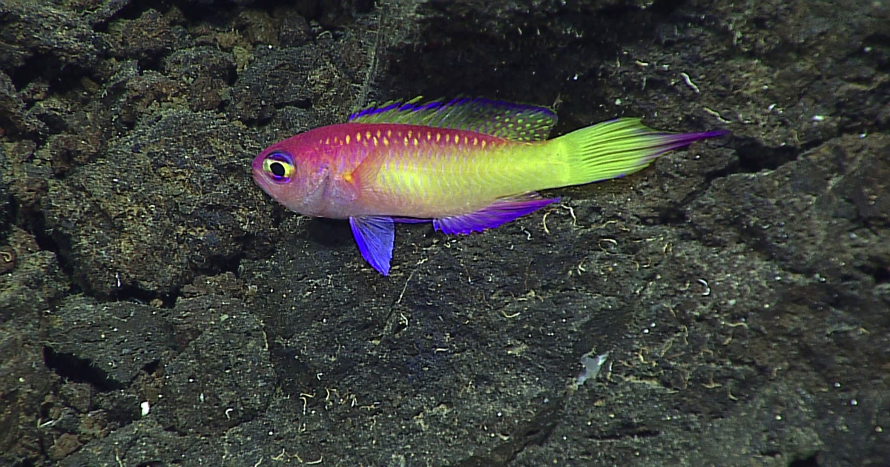

Barreleye Fish
This bizarre creature has a completely transparent forehead! The two glowing green orbs inside its head are its actual eyes, which are tubular and point straight up to spot the silhouettes of prey. The two spots above its mouth are just nostrils.

Deep-Sea Amphipod
These crustacean scavengers are like the vacuums of the deep ocean. While most are tiny, some deep-sea species exhibit "gigantism" and grow up to a foot long! They survive crushing pressures using special chemical compounds that protect their cells.

Frilled Shark
Often called a "living fossil," this deep-water shark moves more like a snake than a fish. It has a jaw lined with 300 backward-facing, trident-shaped teeth arranged in 25 rows, making it virtually impossible for its prey to escape once bitten.

Deep-Sea Jaws
Because meals are so incredibly rare in the deep ocean, many deep-sea predators have evolved massive jaws and terrifying, needle-like teeth. These exaggerated features ensure that when they finally do catch a meal, there is zero chance of it slipping away.

Deep-Sea Jellyfish
Looking like a tiny, glowing UFO, this beautiful jellyfish spends its entire life floating in the deep water column. Its bright, bioluminescent colors are thought to act as a "burglar alarm" to startle predators or attract larger animals to eat whatever is attacking!

Deep Ocean Cleanup
Think of these bright deep-sea critters as the deep ocean's ultimate cleanup crew! They survive the intense pressure of the abyss using special chemical shields in their bodies.

Humpback Anglerfish
Only the females look this intimidating! They feature a built-in fishing rod on their heads holding a glowing lure. The light actually comes from bioluminescent bacteria living inside the lure, which perfectly attracts curious prey in the pitch-black water.

Dumbo Octopus
Named after Disney’s famous flying elephant, this adorable cephalopod uses its large, ear-like fins to gracefully "fly" through the dark water. They are the deepest-living of all known octopuses, capable of surviving at crushing depths of up to 13,000 feet!

Ghost Shark
Older than the dinosaurs, Ghost Sharks are deep-water cousins to modern sharks and rays. The strange "stitches" running across their heads are highly sensitive organs that detect the tiny electrical pulses made by their hidden prey.

Abyssal Travelers
Many deep-sea creatures are surprisingly social! They are often found traveling in herds of hundreds across the abyssal plain. You will almost always find them facing the exact same direction, pointing themselves into the ocean current to catch freshly falling food.

Sea Pig
Despite the name, this isn't a mammal—it’s a deep-water sea cucumber! Those little pink "legs" are actually water-filled tubes they use to march across the ocean floor, vacuuming up tasty organic mud and sunken debris.

Twilight Zone Fish
This neon beauty proves the deep sea isn't just gray and black. Found in the ocean's shadowy "Twilight Zone," its vibrant colors act as camouflage. Because red light doesn't penetrate that deep, these bright colors fade to dark shadows in their natural habitat.